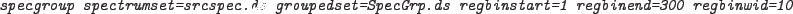

which would make 30 groups of 10 bins each from the initial 300 bins in the spectrum. Note that in this case the bins refer to the position in the spectrum and start from bin 1.
This option may be used in conjunction with one of the statistical options. In which case the regular bin grouping is applied first and the statistical grouping is applied to the remaining ungrouped bins.